What is AI, really?
From Optimization to Generative AI in Five Demos
Jim Pivarski
University of Chicago, Data Science Institute
Computers have come full-circle
Cultural metaphors:
| 1950's: | Oracle, a giant brain you approach with questions |
| 1960's: | Bureaucracy, a filing cabinet for big companies and government |
| 1970's: | Hobby, homebrew, hacking, “computer lib,” video games |
| 1980's: | Personal desktop, spreadsheets, tools, “bicycle of the mind” |
| 1990's: | Place, cyberspace, superhighway, “my ’lil corner of the Internet” |
| 2000's: | Open mic, decentralized communication, the bazaar, the commons |
| 2010's: | Platform, the cloud, social mirror, the Feed/the Algorithm |
| 2020's: | Chatbot, genie, copilot, stochastic parrot… |
Animate: Someone you talk to.
Inanimate: Something you use.
Computers are what our grandparents thought they'd be
After 70 years, something happened to make this hope/fear possible.
The purpose of this talk is to try to say what, exactly, happened.
I want to present a technically accurate picture, using interactive demos instead of mathematical derivations.
Specifically avoiding anthropomorphism and brain metaphors:


Five demos
- Optimization: solving problems by “farming,” rather than “craftsmanship”
- Compression: neural networks part 1: the first layer
- Generalization: neural networks part 2: many layers
- Language Models: semantic meaning in numerical form
- Few-Shot Learning: the surprise discovery
Optimization
“Craftsmanship” versus “farming”
Craftsmanship: Writing instructions to tell a computer what to do

- All details are human choices
- Complexity limited by human mental capacity and ability to communicate in large groups
Farming: Defining constraints and letting an optimization fit them

- Details from optimization process
- Complexity limited by training data and computational resources
Farmers don't manually arrange the individual cells of the plants in their fields.
They manipulate the conditions for growth so the plants can make themselves.
Optimization
We defined 15 free parameters (points on the slide) and a goal: minimize the rolling time.
An optimizer wiggled all 15 parameters, keeping combinations that approach the goal and discarding combinations that take it farther away.
Similar to “survival of the fittest,” but faster: the optimizer samples the rate of change and aims “downhill,” like this minimization of f(x, y) over 2 parameters, x and y:


Analytic solutions and “brute force” computing
This slide optimization problem is an old one that can be solved with calculus of variations.
The optimal shape can be computed on paper by solving a differential equation.
…For this problem. Small modifications, like a ball on a slide with air resistance, results in equations without exact solutions.
This is what computers made possible:
- solving generic optimization problems—any constraints
- that may be very complex—number of parameters is limited only by computational power
Compression
Fitting data
A major application of optimization: fitting a theoretical curve to experimental data.

Instead of minimizing time on a slide, we minimize distance between the curve and the data.
The data are: finite in number and finite in range.
The curve is:
- continuous, filling in gaps between the data points
- infinite in extent, extrapolating to the left and right of all data points
Deep connections between
- Fitting: finding a theoretical curve that explains experimental data
- Predicting: using that curve to predict the values of new data before they are measured
- Compression: replacing the dataset with a curve that approximates it
- Generation: producing synthetic data that are similar to real data
Generative AI is fitted to human text and images, is a compressed version of them, and generates new products that are statistically like them.
Fitting arbitrary shapes
If the data can have any shape, we have to build arbitrary shapes by adding templates:

The optimization process determines how much of each template to contribute.
With enough sinusoidal waves, you can approximate any continuous shape.
This is how JPEG compression works
 “Point of View” by David Revoy – CC-BY 4.0
“Point of View” by David Revoy – CC-BY 4.0


The problem with templates
It's common for real datasets to have localized detail and broad regions without much detail. Templates with fixed shapes struggle to fit data like that.

The problem is even worse for high-dimensional data. Spaces with hundreds or thousands of dimensions are mostly empty.
Adaptive fit functions
Instead of a fixed set of templates that can only be scaled vertically, let's use S-shaped curves that can be placed and scaled horizontally as well as scaled vertically.

Now we can fit localized detail better.

A fit with adaptive functions is a neural network layer
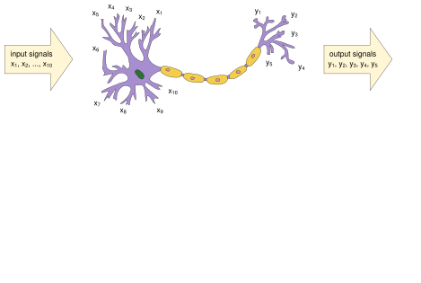
A fit with adaptive functions is a neural network layer

Differences between a neural network and real neurons
| Neural network | Real neurons |
| data are floating-point numbers | data are pulses, timing carries information |
| output is a sum of adaptive fitting components | response is more complex than that |
| organized in layers | no layer structure |
| optimized by a global fit, steered toward steepest descent | optimized by local rules, chemical signals, and evolution |
| only connections matter | chemical signals bypass connections |
Neural networks are inspired by real neurons the way airplanes are inspired by birds.
Generalization
Memorization versus generalization
Data come from measurements of semi-random processes. New data points from the same process are not exactly equal to old data points. They have the same statistical patterns.
An exact fit to one dataset that doesn't fit new data from the same process is a good compression of the first dataset, but not a good predictor of the process.
For prediction and generation of new data, we want models that generalize.
Chaining adaptive fits
Connect the output of one artificial neuron to the input of the next.
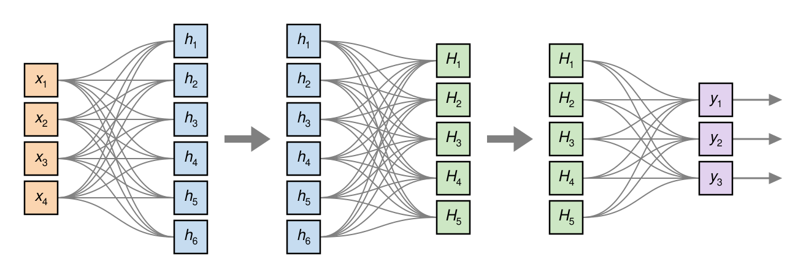
One layer fits an arbitrary pattern; two layers fits patterns of patterns; three layers fits patterns of patterns of patterns…
Layered neural networks find symmetries in the data
Layered neural networks find symmetries in the data
Without layers, a fit function needs an adaptive component to match every wiggle in the data.
With layers, one layer can fold space to line up symmetric elements for the next layer to fit with a single layer.
The more layers a network has, the more cross-cutting structure it will find, as opposed to just matching curves to data fluctuations. Many-layer networks are called deep learning.
Language Models
Neural networks can fit any data composed of numbers
And anything that can be a file in a computer can be an array of numbers.
- Images: grids of pixel brightnesses
- Video: stacks of images over time
- Audio: air pressure, sampled thousands of times per second
- Tables and time series: sensor readings, prices, medical records
- Board games: positions of pieces on a grid
- DNA and proteins: sequences of nucleotides or amino acids
- Natural language: …
Encodings like a = 1, b = 2, c = 3 or apple = 1, ball = 2, cat = 3 are not very efficient because they don't capture the meanings of words or how words relate to other words.
Semantics → geometry
Word embeddings express relationships between the meanings of words as geometric positions in space, and neural networks are great at finding geometric patterns (of patterns).
There are lots of applications:
- Text in, label out: spam filtering, sentiment analysis, grammar checking
- Text in, different text out: language translation, human language → code, summarization
- Text in, closest vectors out: semantic search, recommendations, finding duplicates
- Text in, next word out: autocomplete, chatbots
- Text paired with other data: speech recognition, text-to-speech, image captioning
For years, the hardest part was maintaining coherence over long spans of text.
This “attention mechanism” solved the distance problem
Nowadays, language models create a grid of how every word is related to every other word in a sequence. The size of that grid is called the context window.
This solved the last problem that was preventing language models from being trained on Internet-scale datasets.
- The text corpus gets lossy-compressed like a JPEG: much more data than the model parameters can store.
- The deeply layered network seeks cross-cutting structures in the text, rather than idiosyncratic details.
But then the model ended up with surprising capabilities…
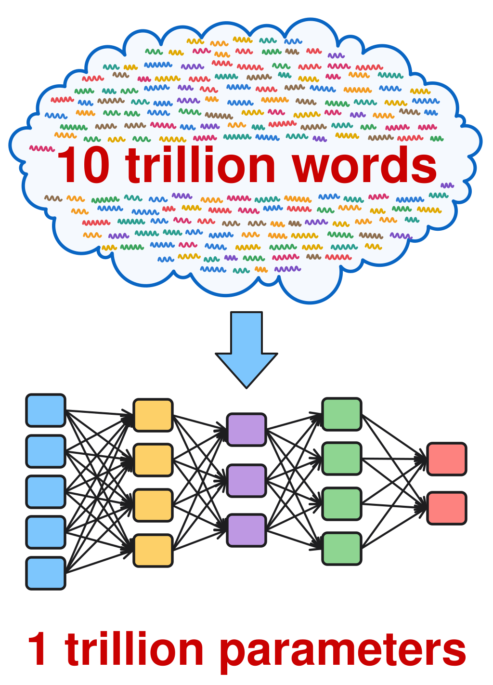
Few-Shot Learning
Large Language Models
Large Language Model (LLM)
Neural network with an attention mechanism, optimized to predict the probability of the next word in a sequence using an enormous text dataset.
It can generate likely text by predicting the next word and then repeating with that word.
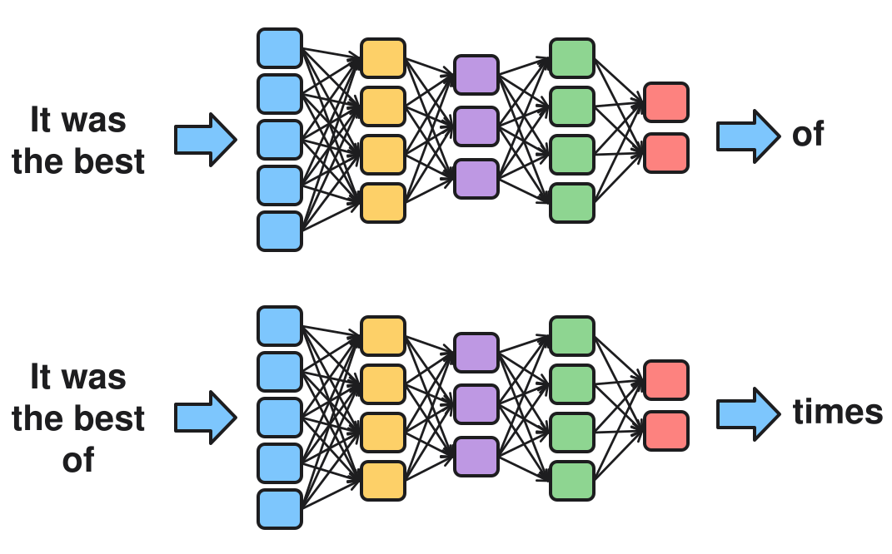
Technicality: not always the best-fit word
For more natural output, LLMs are usually asked for less-perfect autocompletions, controlled by “temperature.” Analogy with physics: higher temperature → more high-energy atoms, higher temperature → more bizarre autocompletions.
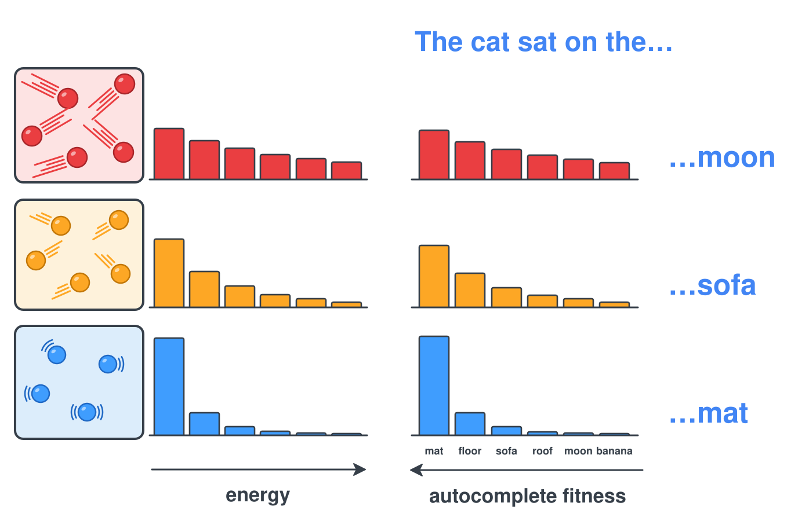
Does an LLM “contain” the training dataset?
Not all of it.
GPT-style LLMs can memorize 3.6 bits/parameter and GPT-4 has 1.76 trillion parameters, so 0.79 TB. However, it was trained with 52 TB of data. It could only store 1% of its training.
Remember that it's like a JPEG, approximating the details:
An LLM learns the kinds of things people say, not exactly what they said.
However, texts that get the most attention are in the 1%
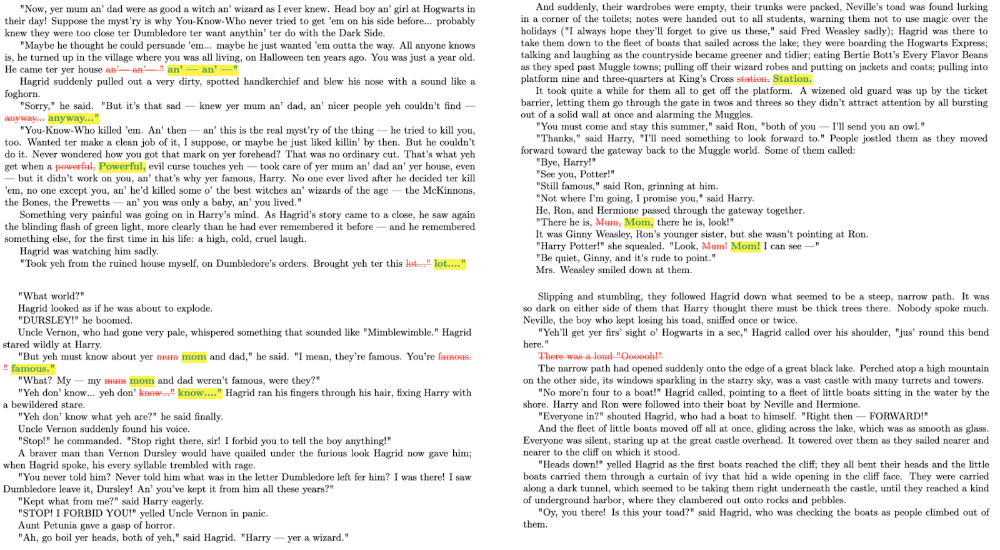
Experiment: two lines from A Tale of Two Cities
What follows “It was the best of times”?
→ it was the worst of times.
→ it was the worst of times.
→ it was the worst of times.
→ it was the worst of times.
→ it was the worst of times.
→ it was the worst of times.
→ it was the worst of times.
→ it was the worst of times.
→ it was the worst of times.
→ it was the worst of times.
Correct every time for the famous first line, never right for the line
from Book the Third, Chapter VI.
What follows “His judges sat upon the Bench in feathered hats”?
→ and looked at Monsieur the Marquis as if they thought him too much above the common herd to be tried by such canaille.
→ and gold-laced coats.
→ but the whole Court was sufficiently covered, as to appearance, with black cloth and horse-hair, as to display an unnatural blotting out of day.
→ but not in furs, to mock the afflicted man.
→ but the roughest men at the Bar had no more emotion than if they had been so many rats.
→ but the red glare of the furnace shone upon them, stern and inexorable, as if they had all been so many fallen angels.
→ and gold-laced coats.
→ and were all in jewels but the axe was sharp, and the block was black.
→ and hanging robes.
→ and hoods; when a prisoner was tried, they had such an air of being all packed up somewhere for safe keeping, that one could have fancied they were all in several bags, and might at any time be brought out and squeezed dry.
Reinforcement Learning from Human Feedback (RLHF)
The difference between this “raw” LLM and what you've used is refinement.
Now nearly all LLMs are further trained on text in the form of stage directions between two characters, “Assistant” and “User”, with the LLM only completing the “Assistant” messages.
Humans rate the quality of the messages, and the optimizer maximizes that score.
Often, standardized tests will also be used, to increase the fraction of correct responses.
Chatbots and Agents
Basic chatbot = LLM + transcript
An LLM has no memory: it only knows what's been said because it's in the transcript.
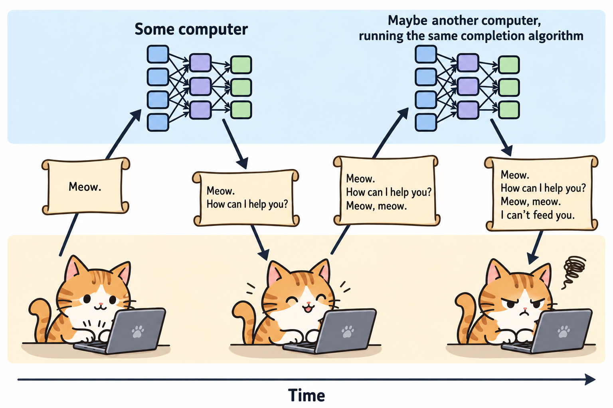
Modern chatbots also talk to “tools” like web search
The web is a better source of correct facts than a lossy-compressed text corpus.
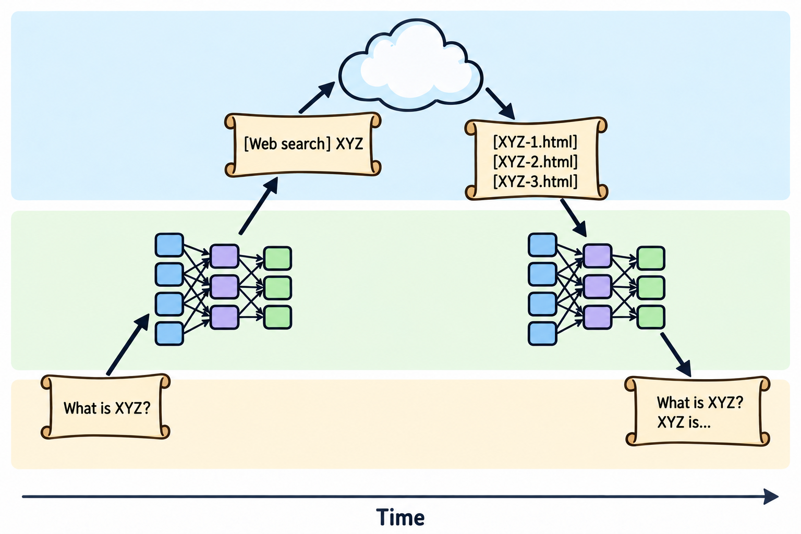
Same lines from A Tale of Two Cities, with web-search
What follows “It was the best of times”?
→ it was the worst of times.
→ it was the worst of times.
→ it was the worst of times.
→ it was the worst of times.
→ it was the worst of times.
→ it was the worst of times.
→ it was the worst of times.
→ it was the worst of times.
→ it was the worst of times.
→ it was the worst of times.
What follows “His judges sat upon the Bench in feathered hats”?
→ but the rough red cap and tricoloured cockade was the head-dress otherwise prevailing.
→ but the rough red cap and tricoloured cockade was the head-dress otherwise prevailing.
→ but the rough red cap and tricoloured cockade was the head-dress otherwise prevailing.
→ but the rough red cap and tricoloured cockade was the head-dress otherwise prevailing.
→ but the rough red cap and tricoloured cockade was the head-dress otherwise prevailing.
→ but the rough red cap and tricoloured cockade was the head-dress otherwise prevailing.
→ but the rough red cap and tricoloured cockade was the head-dress otherwise prevailing.
→ but the rough red cap and tricoloured cockade was the head-dress otherwise prevailing.
→ but the rough red cap and tricoloured cockade was the head-dress otherwise prevailing.
→ but the rough red cap and tricoloured cockade was the head-dress otherwise prevailing.
Now it's correct every time.
We're only relying on its ability to summarize what it found, which is much more accurate.
An internal tool: “reasoning”
A complex problem is more likely to be solved correctly if it's a summary of a long transcript with the problem broken down into steps. Intermediate transcripts are not shown to the user.
This is the “reasoning effort” knob (low/medium/high) in typical chatbots.
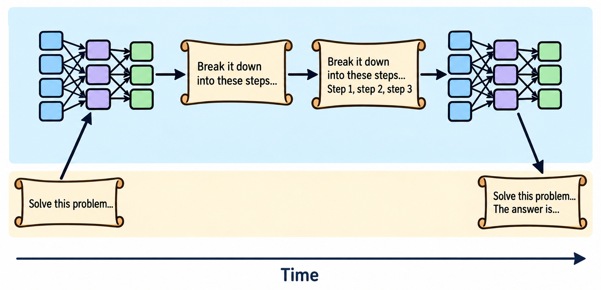
Agents
If these transcripts are interpreted by other programs as instructions to run, the chatbot can change real things. Coding agents are particularly useful.
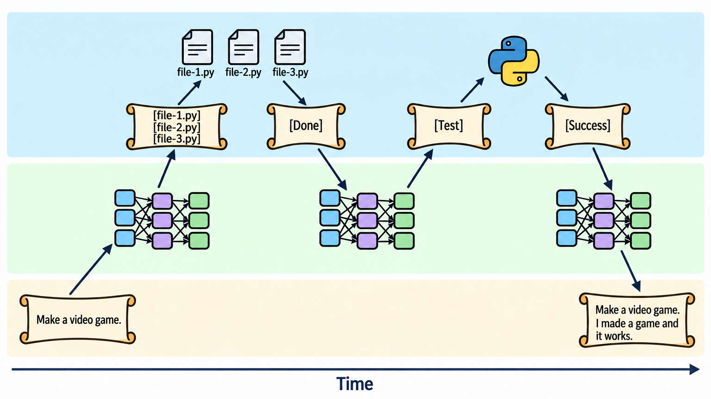
Two fronts for generative AI
- Refinement: frontier labs have been making bigger models, curating training data, improving RLHF techniques, and integrating LLMs with image recognition and generation.
- Agents: everyone else has been building workflows of conventional code around LLMs.
- Integrating into search engines, retrieval over private documents
- Memory systems, LLM-accessible databases
- Coding agents that write, run, and test code in a loop
- New connectors through the Model Context Protocol (MCP)
- Browser and computer use: clicking and typing in applications designed for humans
- Orchestration: one agent delegating subtasks to others
- Statistical workflows with LLMs as classifiers or for structuring free-text data
- Guardrails: code that checks LLM output
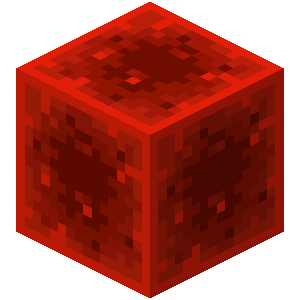
Notice that only one piece is fundamentally new: the LLM
In my opinion, the only deeply surprising result was that a raw LLM can solve generic tasks through few-shot learning. Everything else is a corollary.
Deep neural networks, the attention mechanism, and many other advancements of the past few decades are detector technologies that discovered this fact about human-generated text. They only fitted and reproduced the statistical patterns that are in the text.
If there's an oracle—or golem—in modern chatbots, it's something that had always been latent in our text, for thousands of years.
What we've been doing for the past five years is working through the consequences of that discovery.
Computers have come full-circle
Cultural metaphors:
| 1950's: | Oracle, a giant brain you approach with questions |
| 1960's: | Bureaucracy, a filing cabinet for big companies and government |
| 1970's: | Hobby, homebrew, hacking, “computer lib,” video games |
| 1980's: | Personal desktop, spreadsheets, tools, “bicycle of the mind” |
| 1990's: | Place, cyberspace, superhighway, “my ’lil corner of the Internet” |
| 2000's: | Open mic, decentralized communication, the bazaar, the commons |
| 2010's: | Platform, the cloud, social mirror, the Feed/the Algorithm |
| 2020's: | Chatbot, genie, copilot, stochastic parrot… |
The oracle is a compressed copy of our own text.
Probably not what science fiction authors had in mind.